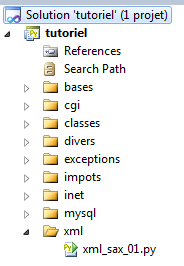

14. Traitement de documents XML
 |
Nous considérons le document XML suivant :
<tribu>
<enseignant>
<personne sexe="M">
<nom>dupont</nom>
<prenom>jean</prenom>
<age>28</age>
ceci est un commentaire
</personne>
<section>27</section>
</enseignant>
<etudiant>
<personne sexe="F">
<nom>martin</nom>
<prenom>charline</prenom>
<age>22</age>
</personne>
<formation>dess IAIE</formation>
</etudiant>
</tribu>
Nous analysons ce document pour produire la sortie console suivante :
tribu
enseignant
(personne,(sexe,M) )
nom
[dupont]
/nom
prenom
[jean]
/prenom
age
[28]
/age
/personne
section
[27]
/section
/enseignant
etudiant
(personne,(sexe,F) )
nom
[martin]
/nom
prenom
[charline]
/prenom
age
[22]
/age
/personne
formation
[dess IAIE]
/formation
/etudiant
/tribu
Il nous faut savoir comment reconnaître :
- une balise de début telle <formation> ;
- une balise de fin telle </enseignant> ;
- une balise de début avec attributs telle <personne sexe="F"> ;
- le corps d'une balise telle martin dans <nom>martin</nom>.
Le programme d'analyse d'un code XML est appelé un parseur XML. Deux modules nous fournissent les fonctionnalités pour analyser un code XML : xml.sax et xml.sax.handler.
Le module [xml.sax] nous fournit un parseur XML par l'instruction :
Ce parseur analyse le texte XML séquentiellement. Il appelle des méthodes de l'utilisateur sur des événements :
- la méthode startElement sur un début de balise ;
- la méthode endElement sur une fin de balise ;
- la méthode characters sur le corps d'une balise.
Il nous faut indiquer au parseur, la classe implémentant ces méthodes :
Nous passons à la méthode setContentHandler du parseur, une instance de classe implémentant les méthodes startElement, endElement, characters. La classe utilisée est une classe dérivée de la classe xml.sax.handler.ContentHandler. Les méthodes précédentes sont appelées avec des paramètres :
- name est le nom de la balise de début. attributs est le dictionnaire des attributs de la balise. Ainsi pour la balise <personne sexe="M"> on aura name="personne" et attributs={'sexe':'M'}
- name est le nom de la balise de fin. Ainsi pour la balise </etudiant> on aura name='etudiant'.
- data est le corps de la balise. Ainsi si la balise est
on aura data='\r\n dupont\r\n '. En général, on se débarrassera des blancs qui précèdent et suivent la donnée.
Ceci expliqué, on peut passer au script d'analyse d'un document XML :
# -*- coding=utf-8 -*-
import xml.sax, xml.sax.handler,re
# classe de gestion XML
class XmlHandler(xml.sax.handler.ContentHandler):
# fonction appelée lors de la rencontre d'une balise de début
def startElement(self,name,attributs):
global depth
# une suite d'espaces (indentation)
print " " * depth,
# attributs
precisions=""
for (attrib,valeur) in attributs.items():
precisions+="(%s,%s) " % (attrib,valeur)
# on affiche le nom de la balise et les éventuels attributs
if precisions :
print "(%s,%s)" % (name,precisions)
else :
print name
# un niveau d'arborescence en plus
depth+=1
# est-ce une balise de données ?
global balisesDonnees,baliseDeDonnees
if balisesDonnees.has_key(name.lower()):
baliseDeDonnees=1
# la fonction appelée lors de la rencontre d'une balise de fin
def endElement(self,name):
# fin de balise
# niveau d'indentation
global depth
depth-=1
# une suite d'espaces (indentation)
print " " * depth,
# le nom de la balise
print "/%s" % (name)
# la fonction d'affichage des données
def characters(self,data):
# données
global baliseDeDonnees
# la balise courante est-elle une balise de données ?
if not baliseDeDonnees :
return
# niveau d'indentation
global depth
# une suite d'espaces (indentation)
print " " * depth,
# les données sont affichées
match=re.match(r"^\s*(.*)\s*$",data)
if match:
print "[%s]" % (match.groups()[0])
# fin de la balise de données
baliseDeDonnees=False
# ------------------------------------------- main
# le programme
# données
file="data.xml" # le fichier xml
depth=0 # niveau d'indentation=profondeur dans l'arborescence
balisesDonnees={"nom":1,"prenom":1,"age":1,"section":1,"formation":1}
baliseDeDonnees=True # à vrai, indique qu'on a affaire à une balise de données
# on crée un objet d'analyse de texte xml
xml_parser=xml.sax.make_parser()
# le gestionnaire de balises
xml_parser.setContentHandler(XmlHandler())
# exploitation du fichier xml
xml_parser.parse(file)
Notes :
- le script utilise la bibliothèque de fonctions des modules xml.sax, xml.sax.handler (ligne 3) ;
- ligne 62 : le fichier XML analysé ;
- ligne 68 : le parseur XML ;
- ligne 70 : le gestionnaire des événements émis par le parseur sera une instance de la classe XmlHandler ;
- ligne 72 : l'analyse du document XML est lancée ;
- ligne 6 : la classe implémentant les méthodes startElement, endElement, characters. Elle est dérivée de la classe xml.sax.handler.ContentHandler qui implémente des méthodes utilisées par le parseur ;
- ligne 9 : la méthode startElement ;
- ligne 30 : la méthode endElement ;
- ligne 41 : la méthode characters.
Les résultats sont ceux présentés au début de ce paragraphe.